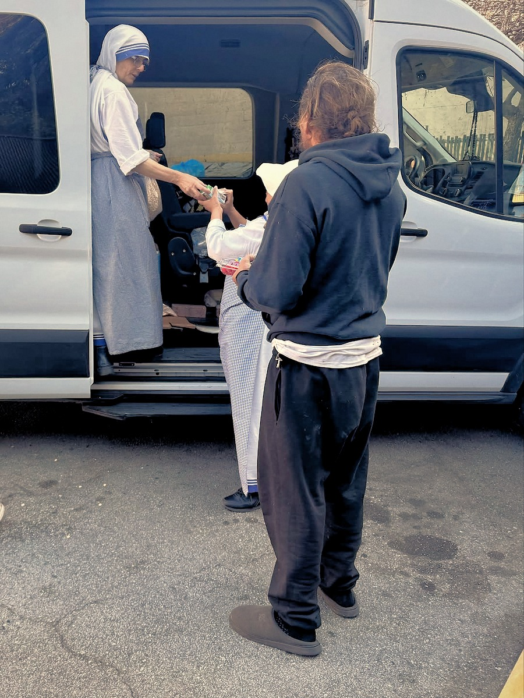
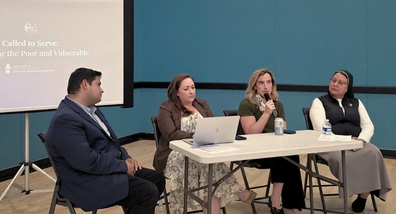
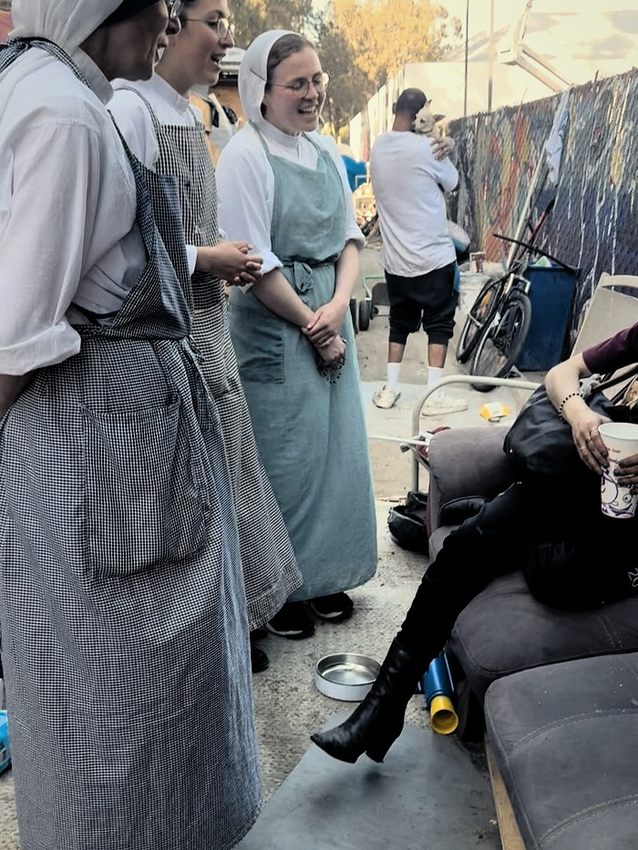
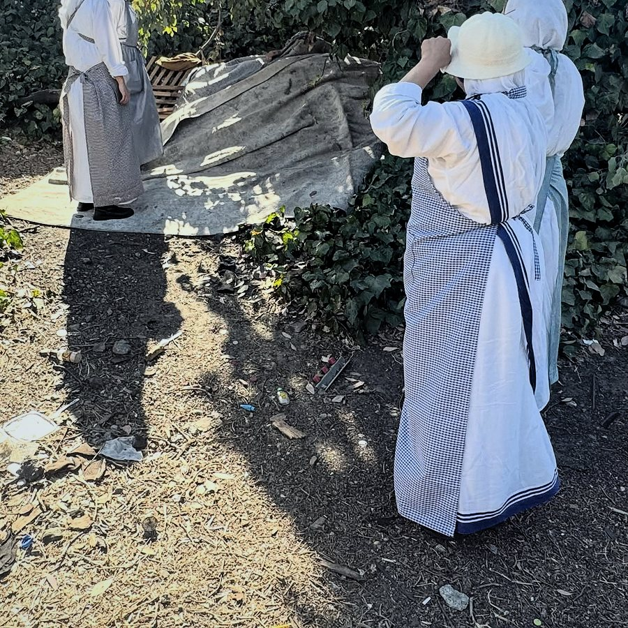
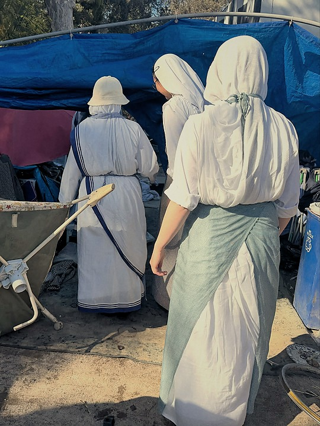

Move beyond passive faith.
A talk, then the action.
September 1, San Francisco
One evening a month, ages 21 to 40With the Archdiocese
Piety and devotion stay in one compartment; work, social life, even family life remain in another.
-

The talkAugust 5
Called to Serve -

The actionAugust 29
Missionaries of Charity

“Each lecture and social event is designed to be allied with a direct ministry action of some kind.”
- Advocating for legislation · California Catholic Conference
- Accompanying immigrants in court
- Homeless ministry · Missionaries of Charity, St. Vincent de Paul
September 1
The Work of Human Hands
One evening a month in San Francisco.

- 6:30–9:30 PM
- Fr. Michael Sweeney OPSean Bryan
- 6:30 wine · 7:00 keynote · 9:00 reception · 9:30 ends
Seven evenings.
Four held.
A keynote, then questions. Recorded here means photographed.

| Date | Evening | Subject |
|---|---|---|
| Called to Lead | Catholic social teaching | |
| Rights and Responsibilities | Advancing the common good | |
| ¿Quién es el hombre de la Sábana Santa? | The man of the Shroud | |
| Called to Serve
August 29Missionaries of Charity |
Option for the poor and vulnerable |




The founders.
One chaplain.
One of them works for the Archdiocese.
- Saul Perez
- Daniel Ramirez
- Jerry Sharp III
- Fr. Tom Martin
- Archdiocese of San Francisco
- California Catholic Conference
- Catholic Charities San Francisco
- Order of Malta
- Lay Mission Institute
- Pro-Life San Francisco
Six institutions, in partnership
Take a seat.
Every lecture night so far has sold out.
What is Catholic social teaching?
The Church’s own teaching on how people are meant to live together, at work and in public.
Do I have to be Catholic?
Nothing in the listings says you must be. The one condition is an age: 21 to 40.
Do I need to know anything first?
No. Each evening stands alone.